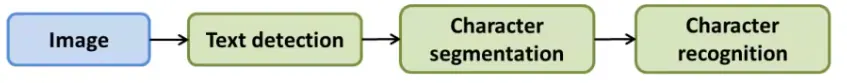
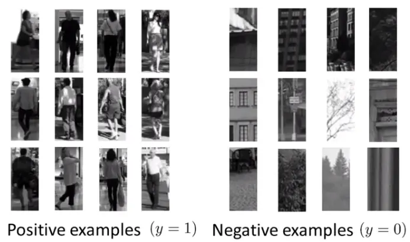
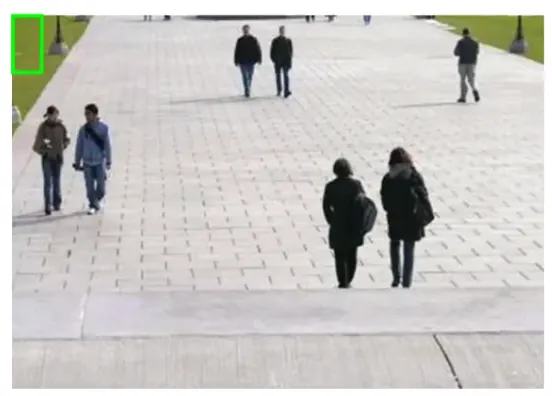
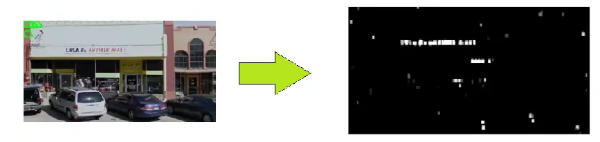
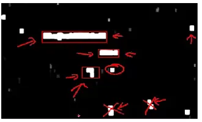
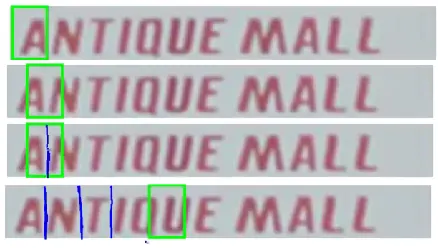
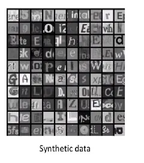

Optical Character Recognition (OCR) enables computers to interpret text within images. This process involves a machine learning pipeline comprising several steps, each focused on a specific aspect of OCR, like pedestrian or text detection. The pipeline integrates various techniques, including data synthesis, to enhance the accuracy and reliability of character recognition.

Here's a mock Python code demonstrating a pipeline for OCR (Optical Character Recognition) tasks, including image preprocessing, text detection, segmentation, and character recognition.
# Step 1: Import necessary libraries
import cv2
import pytesseract
from skimage.segmentation import clear_border
from skimage.measure import label, regionprops
import matplotlib.pyplot as plt
# Step 2: Load and preprocess the image
def load_preprocess_image(filepath):
# Load the image
image = cv2.imread(filepath, cv2.IMREAD_GRAYSCALE)
# Preprocess the image (e.g., thresholding)
_, processed_image = cv2.threshold(image, 128, 255, cv2.THRESH_BINARY_INV + cv2.THRESH_OTSU)
return processed_image
# Step 3: Text detection
def detect_text(image):
# Use pytesseract to detect text
text_boxes = pytesseract.image_to_boxes(image)
return text_boxes
# Step 4: Text segmentation
def segment_text(image):
# Clear the borders and label the image
cleared = clear_border(image)
label_image = label(cleared)
# Extract regions (potential characters)
regions = regionprops(label_image)
return regions
# Step 5: Character recognition
def recognize_characters(image, regions):
characters = []
for region in regions:
# Extract each character
minr, minc, maxr, maxc = region.bbox
char_image = image[minr:maxr, minc:maxc]
# Recognize the character using pytesseract
char_text = pytesseract.image_to_string(char_image, config='--psm 10')
characters.append(char_text)
return characters
# Step 6: Visualize results
def visualize_results(image, text_boxes, characters):
# Plot the original image with detected text boxes
plt.imshow(image, cmap='gray')
for box, char in zip(text_boxes.splitlines(), characters):
b = box.split(' ')
x, y, w, h = int(b[1]), int(b[2]), int(b[3]), int(b[4])
cv2.rectangle(image, (x, h), (w, y), (0, 255, 0), 2)
plt.text(x, y, char, color='red', fontsize=12)
plt.show()
# Main function to execute the OCR pipeline
def main(filepath):
image = load_preprocess_image(filepath)
text_boxes = detect_text(image)
regions = segment_text(image)
characters = recognize_characters(image, regions)
visualize_results(image, text_boxes, characters)
# Execute the OCR pipeline
if __name__ == "__main__":
filepath = 'path_to_your_image_file.png'
main(filepath)You can customize each step based on your specific OCR requirements and data.


Here is a mock Python code demonstrating the application of a trained classifier to detect pedestrians using a standard human aspect ratio patch (82 x 36 pixels). The code will iterate over the entire image, adjusting the patch position and size to ensure comprehensive detection.
import cv2
import numpy as np
from sklearn.externals import joblib
# Load the trained classifier
def load_classifier(model_path):
classifier = joblib.load(model_path)
return classifier
# Function to slide window across the image
def sliding_window(image, step_size, window_size):
for y in range(0, image.shape[0] - window_size[1], step_size):
for x in range(0, image.shape[1] - window_size[0], step_size):
yield (x, y, image[y:y + window_size[1], x:x + window_size[0]])
# Function to resize the image
def resize_image(image, scale_percent):
width = int(image.shape[1] * scale_percent / 100)
height = int(image.shape[0] * scale_percent / 100)
dim = (width, height)
resized = cv2.resize(image, dim, interpolation = cv2.INTER_AREA)
return resized
# Apply classifier on each patch
def apply_classifier(image, classifier):
window_size = (82, 36) # Standard human aspect ratio patch
step_size = 10 # Step size for moving the patch
detections = []
# Iterate over multiple scales
for scale in range(10, 110, 10):
resized_image = resize_image(image, scale)
for (x, y, window) in sliding_window(resized_image, step_size, window_size):
if window.shape[0] != window_size[1] or window.shape[1] != window_size[0]:
continue
# Feature extraction (example using HOG)
hog = cv2.HOGDescriptor()
features = hog.compute(window).reshape(1, -1)
# Predict using the classifier
prediction = classifier.predict(features)
if prediction == 1: # Assuming 1 indicates pedestrian
detections.append((x, y, x + window_size[0], y + window_size[1], scale))
return detections
# Draw detections on the image
def draw_detections(image, detections):
for (x1, y1, x2, y2, scale) in detections:
cv2.rectangle(image, (x1, y1), (x2, y2), (0, 255, 0), 2)
cv2.imshow('Detections', image)
cv2.waitKey(0)
cv2.destroyAllWindows()
# Main function to execute the detection pipeline
def main(image_path, model_path):
image = cv2.imread(image_path)
classifier = load_classifier(model_path)
detections = apply_classifier(image, classifier)
draw_detections(image, detections)
# Execute the detection pipeline
if __name__ == "__main__":
image_path = 'path_to_your_image_file.jpg'
model_path = 'path_to_your_trained_model.pkl'
main(image_path, model_path)The classifier should be trained beforehand and saved as a .pkl file. The sliding window and resizing steps ensure that pedestrians of different sizes are detected across the entire image.

Here is a mock Python code demonstrating the process of training a text detection classifier.
# Mock Python Code for Training a Text Detection Classifier
import cv2
import numpy as np
from sklearn.ensemble import RandomForestClassifier
from sklearn.feature_extraction.text import CountVectorizer
from sklearn.externals import joblib
# Function to extract features from images
def extract_features(image):
# Example: Using Histogram of Oriented Gradients (HOG)
hog = cv2.HOGDescriptor()
features = hog.compute(image)
return features.flatten()
# Load and prepare the training dataset
def prepare_training_set(pos_image_paths, neg_image_paths):
X = []
y = []
# Load positive samples (text images)
for path in pos_image_paths:
image = cv2.imread(path, cv2.IMREAD_GRAYSCALE)
features = extract_features(image)
X.append(features)
y.append(1) # Label for text
# Load negative samples (non-text images)
for path in neg_image_paths:
image = cv2.imread(path, cv2.IMREAD_GRAYSCALE)
features = extract_features(image)
X.append(features)
y.append(0) # Label for non-text
return np.array(X), np.array(y)
# Train the classifier
def train_classifier(X, y):
classifier = RandomForestClassifier(n_estimators=100, random_state=42)
classifier.fit(X, y)
return classifier
# Main function for training
def main_train(pos_image_paths, neg_image_paths, model_path):
X, y = prepare_training_set(pos_image_paths, neg_image_paths)
classifier = train_classifier(X, y)
joblib.dump(classifier, model_path)
# Execute the training
if __name__ == "__main__":
pos_image_paths = ['path_to_positive_image1.jpg', 'path_to_positive_image2.jpg'] # Add all paths
neg_image_paths = ['path_to_negative_image1.jpg', 'path_to_negative_image2.jpg'] # Add all paths
model_path = 'path_to_save_trained_model.pkl'
main_train(pos_image_paths, neg_image_paths, model_path)
Here is a mock Python code demonstrating region identification for text detection. This includes handling classifier confidence levels and applying an expansion algorithm to identify and enlarge potential text regions.
import cv2
import numpy as np
from sklearn.externals import joblib
from skimage.measure import label, regionprops
# Load the trained classifier
def load_classifier(model_path):
classifier = joblib.load(model_path)
return classifier
# Function to slide window across the image and obtain confidence levels
def sliding_window_confidence(image, step_size, window_size, classifier):
confidence_map = np.zeros((image.shape[0], image.shape[1]), dtype=np.float32)
for y in range(0, image.shape[0] - window_size[1], step_size):
for x in range(0, image.shape[1] - window_size[0], step_size):
window = image[y:y + window_size[1], x:x + window_size[0]]
if window.shape[0] != window_size[1] or window.shape[1] != window_size[0]:
continue
# Feature extraction (example using HOG)
hog = cv2.HOGDescriptor()
features = hog.compute(window).reshape(1, -1)
# Predict confidence using the classifier
confidence = classifier.predict_proba(features)[0][1] # Confidence for text class
# Assign confidence to the confidence map
confidence_map[y:y + window_size[1], x:x + window_size[0]] = confidence
return confidence_map
# Function to apply expansion algorithm
def expand_regions(confidence_map, threshold):
# Threshold the confidence map to create a binary mask
binary_map = (confidence_map > threshold).astype(np.uint8)
# Label connected components
labeled_map = label(binary_map)
# Initialize a list to store bounding boxes of text regions
text_regions = []
# Iterate over detected regions
for region in regionprops(labeled_map):
# Get the bounding box of the region
min_row, min_col, max_row, max_col = region.bbox
# Filter out improbable regions based on size or aspect ratio
region_height = max_row - min_row
region_width = max_col - min_col
aspect_ratio = region_width / region_height
if region_height > 5 and region_width > 5 and 0.2 < aspect_ratio < 5:
text_regions.append((min_col, min_row, max_col, max_row))
return text_regions
# Draw text regions on the image
def draw_text_regions(image, text_regions):
for (x1, y1, x2, y2) in text_regions:
cv2.rectangle(image, (x1, y1), (x2, y2), (0, 255, 0), 2)
cv2.imshow('Text Regions', image)
cv2.waitKey(0)
cv2.destroyAllWindows()
# Main function to execute the region identification
def main_region_identification(image_path, model_path, confidence_threshold):
image = cv2.imread(image_path, cv2.IMREAD_GRAYSCALE)
classifier = load_classifier(model_path)
window_size = (82, 36) # Predefined window size for text detection
step_size = 10 # Step size for moving the window
# Obtain confidence map
confidence_map = sliding_window_confidence(image, step_size, window_size, classifier)
# Apply expansion algorithm to identify text regions
text_regions = expand_regions(confidence_map, confidence_threshold)
# Draw identified text regions on the image
draw_text_regions(image, text_regions)
# Execute the region identification pipeline
if __name__ == "__main__":
image_path = 'path_to_your_image_file.jpg'
model_path = 'path_to_your_trained_model.pkl'
confidence_threshold = 0.5 # Set a threshold for text confidence
main_region_identification(image_path, model_path, confidence_threshold)The classifier should be trained beforehand and saved as a .pkl file. The confidence map visualizes the classifier's confidence in detecting text, and the expansion algorithm merges and filters regions to identify potential text areas.

Here's a mock Python code for a 1D sliding window approach to segment text into individual characters. This involves sliding a one-dimensional window along identified text areas and determining character separation.
import cv2
import numpy as np
import matplotlib.pyplot as plt
# Function to preprocess the text area
def preprocess_text_area(text_area):
# Convert to binary image (thresholding)
_, binary_image = cv2.threshold(text_area, 128, 255, cv2.THRESH_BINARY_INV + cv2.THRESH_OTSU)
return binary_image
# Function to perform 1D sliding window for character segmentation
def sliding_window_1d(text_area, window_width):
height, width = text_area.shape
character_separations = []
# Sum pixel values vertically to get a 1D projection profile
vertical_projection = np.sum(text_area, axis=0)
for x in range(0, width - window_width + 1):
window_sum = np.sum(vertical_projection[x:x + window_width])
if window_sum == 0:
character_separations.append(x + window_width // 2)
return character_separations
# Function to draw character separations on the image
def draw_character_separations(text_area, character_separations):
output_image = cv2.cvtColor(text_area, cv2.COLOR_GRAY2BGR)
for x in character_separations:
cv2.line(output_image, (x, 0), (x, output_image.shape[0]), (0, 0, 255), 2)
return output_image
# Main function for character segmentation
def main_character_segmentation(image_path, text_bounding_box):
# Load the image and extract the text area
image = cv2.imread(image_path, cv2.IMREAD_GRAYSCALE)
x1, y1, x2, y2 = text_bounding_box
text_area = image[y1:y2, x1:x2]
# Preprocess the text area
preprocessed_text_area = preprocess_text_area(text_area)
# Perform 1D sliding window for character segmentation
window_width = 3 # Width of the sliding window
character_separations = sliding_window_1d(preprocessed_text_area, window_width)
# Draw character separations on the text area
segmented_image = draw_character_separations(preprocessed_text_area, character_separations)
# Display the result
plt.imshow(segmented_image)
plt.title('Character Segmentation')
plt.show()
# Execute the character segmentation pipeline
if __name__ == "__main__":
image_path = 'path_to_your_image_file.jpg'
text_bounding_box = (50, 100, 300, 150) # Example bounding box coordinates (x1, y1, x2, y2)
main_character_segmentation(image_path, text_bounding_box)The code assumes a predefined bounding box (text_bounding_box) for the text area within the image. The sliding_window_1d function identifies potential character boundaries based on the vertical projection profile of the text area, and the separations are visualized by drawing red lines on the image.

Below is a mock Python code for training data enhancement for character recognition. This includes using grayscale images, generating a vast training set with various fonts and random backgrounds, and introducing distortions to make the model more robust.
import cv2
import numpy as np
from PIL import Image, ImageDraw, ImageFont
import random
import os
# Function to generate random backgrounds
def generate_random_background(width, height):
background = np.random.randint(0, 256, (height, width), dtype=np.uint8)
return background
# Function to overlay text on random background
def overlay_text_on_background(text, font_path, font_size, background):
height, width = background.shape
image = Image.fromarray(background)
draw = ImageDraw.Draw(image)
font = ImageFont.truetype(font_path, font_size)
text_width, text_height = draw.textsize(text, font=font)
position = ((width - text_width) // 2, (height - text_height) // 2)
draw.text(position, text, font=font, fill=(255,))
return np.array(image)
# Function to introduce distortions
def introduce_distortions(image):
# Example distortions: rotation, scaling, and noise
rows, cols = image.shape
# Rotation
angle = random.uniform(-10, 10)
M = cv2.getRotationMatrix2D((cols / 2, rows / 2), angle, 1)
rotated = cv2.warpAffine(image, M, (cols, rows))
# Scaling
scale = random.uniform(0.9, 1.1)
scaled = cv2.resize(rotated, None, fx=scale, fy=scale, interpolation=cv2.INTER_LINEAR)
# Adding noise
noise = np.random.randint(0, 50, (rows, cols), dtype=np.uint8)
noisy_image = cv2.add(scaled, noise)
return noisy_image
# Function to create training data
def create_training_data(characters, font_paths, num_samples_per_char, image_size):
X = []
y = []
for char in characters:
for font_path in font_paths:
for _ in range(num_samples_per_char):
# Generate random background
background = generate_random_background(image_size, image_size)
# Overlay text on background
font_size = random.randint(20, 40)
char_image = overlay_text_on_background(char, font_path, font_size, background)
# Convert to grayscale
gray_image = cv2.cvtColor(char_image, cv2.COLOR_BGR2GRAY)
# Introduce distortions
distorted_image = introduce_distortions(gray_image)
# Append to dataset
X.append(distorted_image)
y.append(char)
return np.array(X), np.array(y)
# Save the generated images for visualization
def save_generated_images(X, y, output_dir):
if not os.path.exists(output_dir):
os.makedirs(output_dir)
for i, (image, label) in enumerate(zip(X, y)):
output_path = os.path.join(output_dir, f'{label}_{i}.png')
cv2.imwrite(output_path, image)
# Main function to create and save the training dataset
def main_training_data_enhancement(characters, font_paths, num_samples_per_char, image_size, output_dir):
X, y = create_training_data(characters, font_paths, num_samples_per_char, image_size)
save_generated_images(X, y, output_dir)
# Execute the training data enhancement
if __name__ == "__main__":
characters = 'ABCDEFGHIJKLMNOPQRSTUVWXYZabcdefghijklmnopqrstuvwxyz0123456789'
font_paths = ['path_to_font1.ttf', 'path_to_font2.ttf'] # Add paths to different font files
num_samples_per_char = 100 # Number of samples per character
image_size = 64 # Size of the generated image (64x64 pixels)
output_dir = 'path_to_output_directory'
main_training_data_enhancement(characters, font_paths, num_samples_per_char, image_size, output_dir)By using different fonts and random backgrounds, the model can learn to recognize characters in various contexts, making it more robust and effective in real-world scenarios.
These notes are based on the free video lectures offered by Stanford University, led by Professor Andrew Ng. These lectures are part of the renowned Machine Learning course available on Coursera. For more information and to access the full course, visit the Coursera course page.